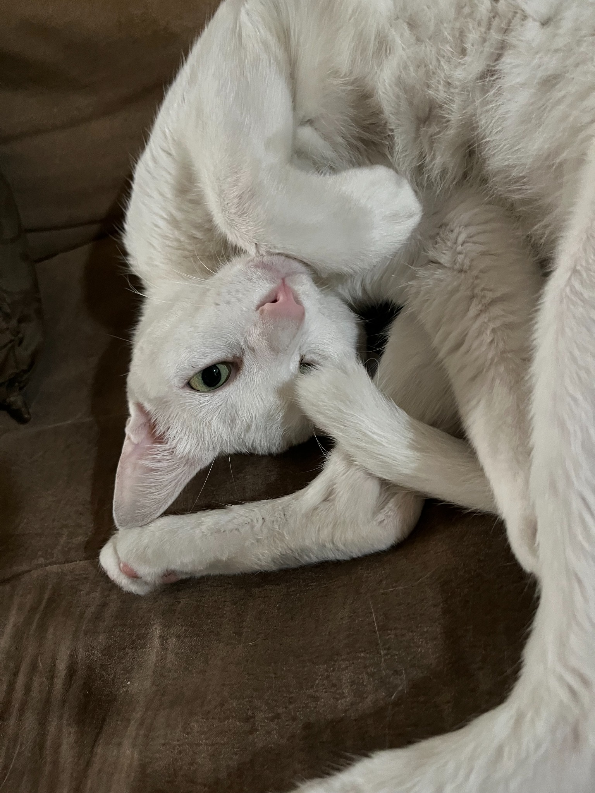
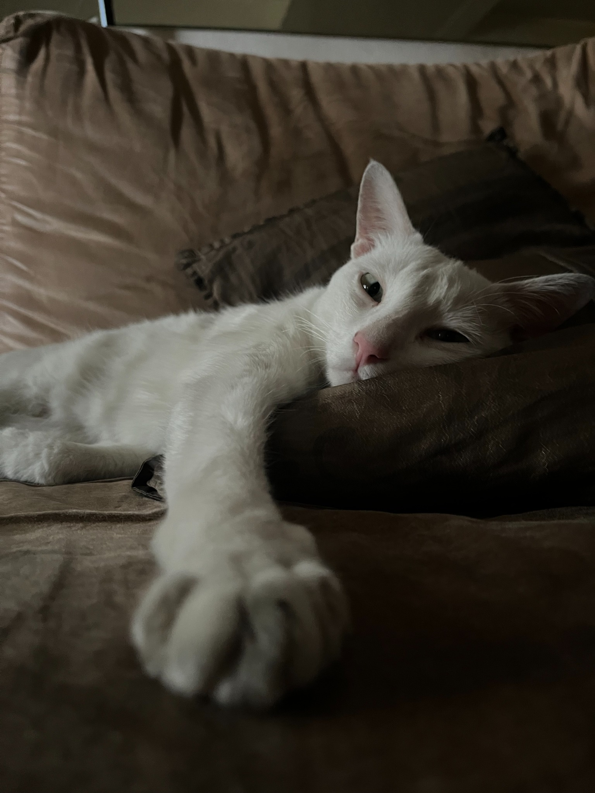
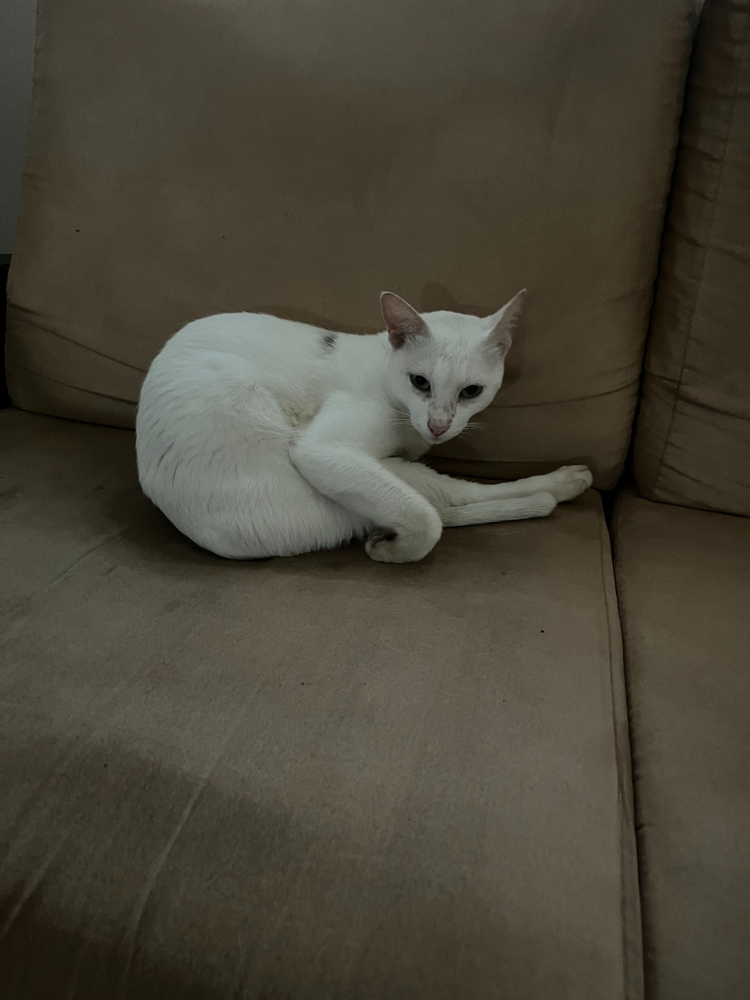

A loving home
Every cat deserves a safe place to live and rest.
A little website with a big heart
Helping kittens find loving forever homes.
The cat behind the website
Shiro is my family's adopted cat. She is the inspiration for this website and a reminder that every cat deserves a loving home.

A member of the family
My family adopted Shiro and gave her a place to call home. She has white fur, green eyes, and a pink nose. This photo shows her laying on our couch!.
Having Shiro in our family is one of the reasons I wanted to share information about adoption and fostering with others.
Life at home
Here are two more photos of Shiro enjoying some quiet time at home.


Every cat deserves a safe place to live and rest.
Cats depend on us for food, fresh water, attention, and health care.
Adoption is a commitment to care for a cat throughout its life.